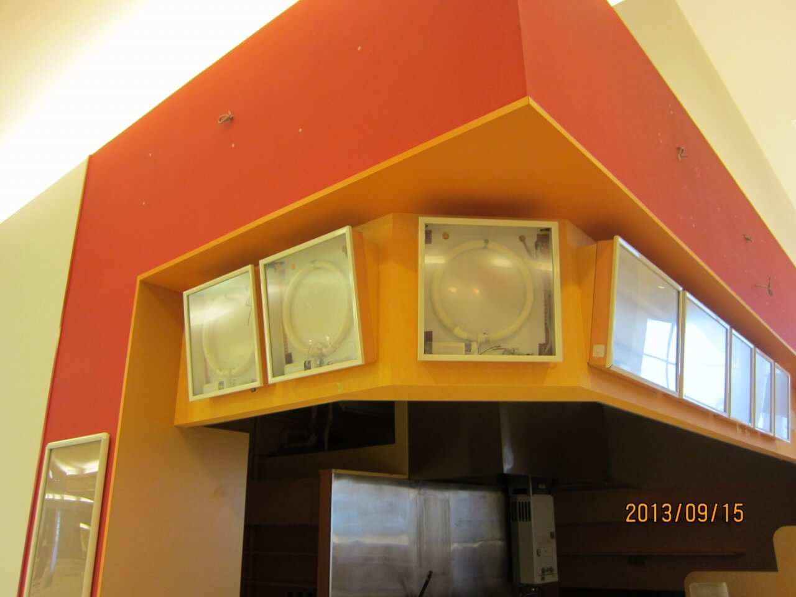

【明るい廃墟】奇跡の再生を遂げたピエリ守山の過去の寂れた姿【写真集】
.jpg)
今更ではありますが、パソコンの中の写真を整理していたら面白いのが出てきたので。 滋賀県は琵琶湖大橋の東詰に位置するショッピングモール、ピエリ守山をご存知ですか。
現在はたくさんの人で賑わうショッピングモールですが、かつてはネット上で話題になっていたとおり、「明るい廃墟」と揶揄される、寂れたショッピングモールでした。
当時廃墟モールとしてお祭り騒ぎになっていたころに、滋賀県に住む者として遊びに行き、ブログに写真をアップしたところ、まとめサイトに載ってバズり、たくさんのアクセスを頂きました。
そのブログはもう残ってないというのと、今”ピエリ守山”と検索したところ、奇跡の復活をとげた、というところばかりがフィーチャーされて、昔の記録が残っていないように感じたので、今更ながらまたブログに貼り付けておきたいと思います。
カメラが悪いのか腕が悪いのか、全体的に写真のピントが甘いです…ごめんなさい。写真はタップ/クリックで拡大します。
店内の状況
僕がピエリ守山へ行ったのは、写真の右下に書いてあるように2013年9月15日ですね。余談ですが写真のタイムスタンプは今となっては懐かしい機能のような気がします。
ショッピングモール全体で10店舗ほどしかお店が営業していませんでした。
寂れた店内
ピエリ守山の明るい廃墟の写真をお楽しみください。入り口から閑静な雰囲気が伝わってきます。
.jpg)
.jpg)
.jpg)
「あぶないので はいらないでね」
基本的にどこのお店もやっていません。2008年開業当時に、200のテナントがあったのが、10店舗になっているということなので、95％のお店は潰れているということになりますね。（？）
.jpg)
.jpg)
.jpg)
中にはauショップのように、お店の雰囲気を一部残して退店しているところもありました。
.jpg)
.jpg)
.jpg)
こちらは2階部分です。おしゃれな吹き抜けと人がいないのとで開放感があります。
.jpg)
.jpg)
.jpg)
.jpg)
座り心地の良さそうなソファです。
エレベーターは節電のために休止していました。節電のためです。
まだ営業しているお店たち
一方、閉店ラッシュの流れに逆らって営業を続けているたくましいお店も…。
.jpg)
ペットランドMIKUNIは、テナントが減り続ける中で最後まで残った、ペット用品店です。現在リニューアルオープンしたピエリ守山でも営業を続けています。
フードコートでお食事
ちょうどお昼時に遊びに行ったので、フードコートで食事をしました。
誰もいなくね？

.jpg)
スガキヤは2週間前に閉店していました。悲しい。
と思ったら開いているお店を発見！！
.jpg)
ごちそうさまでした！
目玉は全機無料のゲームセンター！
1階には店内のゲームが全部無料のゲームセンターがありました。太鼓の達人も無料で遊べました。
.jpg)
ここまで太っ腹なゲームセンターは後にも先にも見たことがありません。
ピエリ守山の現在は！
現在は約1年の改装期間を経てリニューアルし、昨年には同じ敷地内にスーパー銭湯も完成して今なお活気づいています。安心して遊びに行ってください。